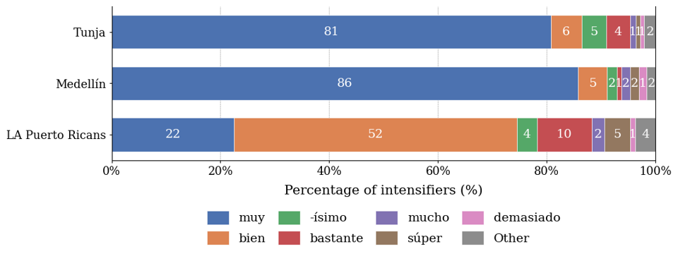
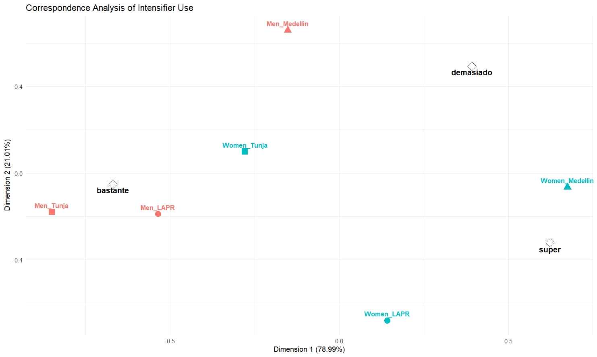
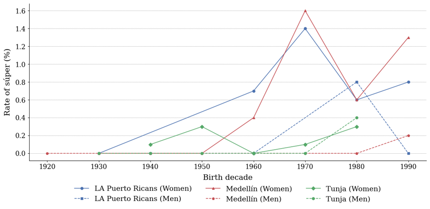

A Variationist Study of Spanish Intensifiers
This variationist study reveals intensifier choice across Medellín, Tunja, and the Baton Rouge Puerto Rican diaspora (henceforth LAPR) as a profound index of cultural identity, social positioning, and community belonging that illuminates the deep entanglement of language and social life. The research demonstrates that intensifiers are not neutral grammatical tools but culturally loaded social resources whose meaning and distribution reflect the histories, hierarchies, and aspirations of the communities that use them.
LAPR speakers maintain a coherent community of practice despite diaspora displacement, and their strong preference for bien (42.2%) over muy (26.9%) asserts an enduring Caribbean cultural identity that persists in Louisiana even as speakers navigate daily life in an English-dominant environment. This pattern speaks powerfully to the role of language in diaspora identity maintenance, illustrating how bien serves to communicate part of Puerto Rican identity.
Medellín's culturally distinct Paisa community sustains stable intensification patterns across generations, while Tunja's speakers reveal how education-linked stratification connects innovative forms to social mobility, with súper entirely absent among low-education speakers yet embraced by university-educated cohorts who potentially deploy it as a marker of cosmopolitan aspiration. Meanwhile, English contact accelerates súper's adoption in LAPR, where bilingualism and cultural contact create additional social pathways for innovation, reflecting the unique cultural position of a community living between two languages and two worlds.
Súper represents a textbook case of innovation from above, driven overwhelmingly by young middle- and upper-class women who function as cultural trendsetters across all three communities, using innovative intensifier forms to perform modern, educated, and socially mobile identities. Their leadership in linguistic change is not surprising as similar trends have been seen in other studies. LAPR speakers also incorporate this change more and earlier than other communities due to their proximity to English (from which súper originates)
Crucially, no intensifier disappears from any community studied. Instead, the system expands through additive identity layering, where inherited forms like muy and bien coexist with innovations like súper, enabling speakers to simultaneously assert local cultural roots and cosmopolitan participation. This linguistic pattern mirrors the layered cultural identities of contemporary Spanish speakers themselves, rooted in particular places and communities yet oriented toward broader social and cultural worlds that transcend any single locality.
Appendix


